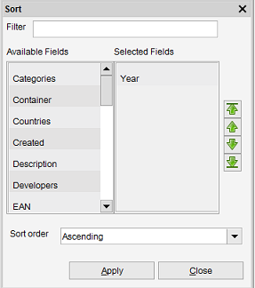

Sorting Items
Right-click in item view > Select Sort
Items can be sorted by right clicking on the view and selecting the sort option. The items in the view are sorted on the fields
shown in the right panel. The available fields (on which can be sorted) are displayed on the left panel.
Fields can be moved by double clicking on them.

You can sort on multiple fields at once. Data Crow will sort first on the field first in the list, then the second, etc.
To change the order use the green arrow icons as shown on the right hand side of the screen.
Finding the field
In case you can't find the field you are looking for you can us the filter bar.
In the upper part of the screen you find a text field. Here you can type the name of the field you are looking for.
In the example below I have typed 'Cate' to find the Categories field.
Sort order
Here you can change the sort order (reverse the order by descending the sorted items):